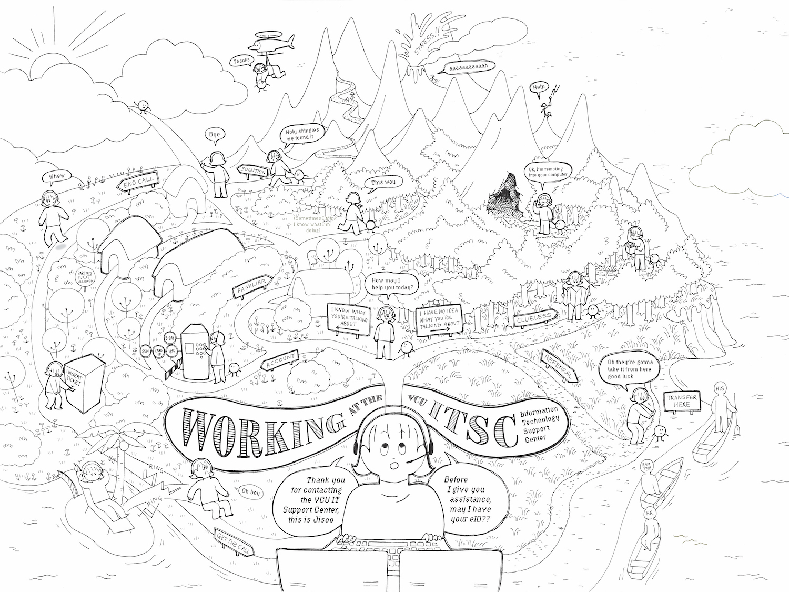

First, a very rough sketch in pencil to get an idea of how the map will look.

Another sketch is drawn to size (approx. 18 x 24 in.) and traced with micron pens.
Then the artwork is scanned, digitally cleaned and typeset.

Finally, colors and textures are added using Photoshop.
Back to Project